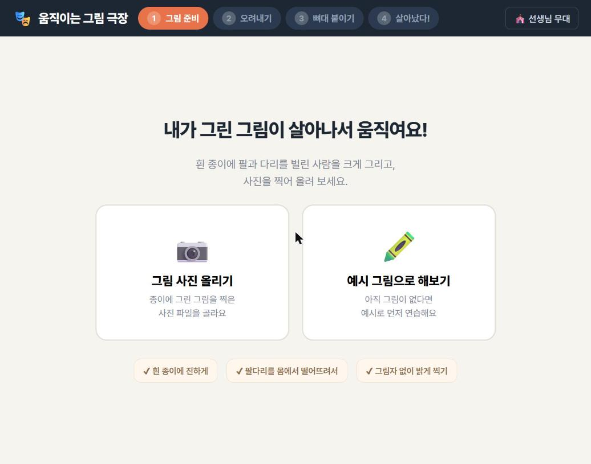
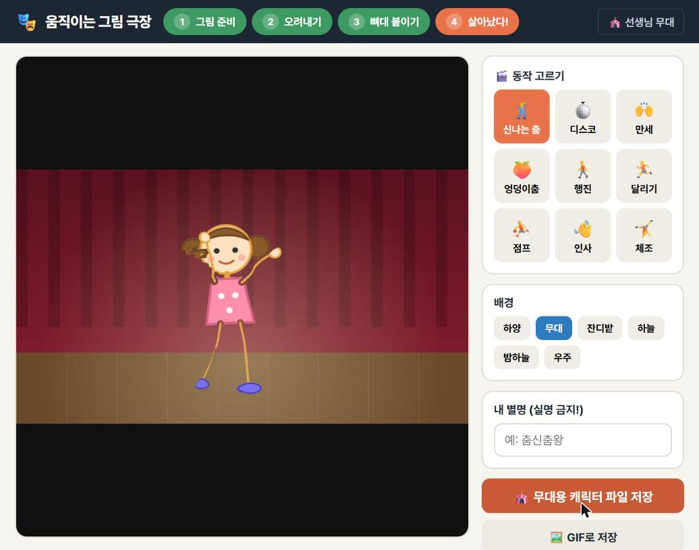

내가 그린 그림이 춤을 춰요
종이에 그린 그림을 사진으로 올리면 움직이는 애니메이션이 됩니다.
설치도, 가입도 없습니다. 그림은 서버로 전송되지 않고 내 컴퓨터 안에서만 처리돼요.
✏️준비: 그림은 이렇게 그려요
그림을 그리는 단계가 절반입니다. 아래 3가지만 지키면 훨씬 예쁘게 움직여요.
- 흰 종이에 진한 색으로 크게 그려요. (연한 연필 선은 지워질 수 있어요)
- 만세 자세처럼 팔과 다리를 몸에서 떨어뜨려 벌려 그려요. 팔이 몸에 붙어 있으면 몸이 같이 움직여요.
- 사진은 그림자 없이 밝게, 똑바로 찍어요.

👍 이런 그림이 가장 예쁘게 움직여요 (만세 자세)

시작 화면 — 그림이 없으면 「예시 그림으로 해보기」
1사진 올리기 & 배경 지우기
「그림 사진 올리기」를 누르고 사진을 고르면, 종이 배경이 자동으로 지워집니다.

체크무늬는 투명해진 부분이에요. 그림만 남으면 성공!
- 그림 일부가 같이 지워졌으면 → 🖌️ 살리기 브러시로 그 부분을 칠해요.
- 배경이 덜 지워졌으면 → 🧽 지우기 브러시로 지우거나, 「배경 지우는 세기」를 강함 쪽으로 옮겨요.
- 다 되면 Enter 키 또는 「다음」 버튼!
2뼈대 붙이기
동그란 점 16개를 끌어서 그림의 몸에 맞춰요. 여기가 가장 중요한 단계예요!

점을 다 맞춘 모습 — 🟠 몸통·머리 / 🔵 팔 / 🟢 다리
- 순서 추천: 머리 끝 → 어깨 → 팔꿈치 → 손 → 골반 → 무릎 → 발
- 손 점은 그림의 손바닥 위에, 발 점은 신발 위에 정확히 놓아요.
- 꼬였으면 「점 위치 처음으로」를 누르고 다시 하면 돼요.
3살아났다! 동작 고르고 저장하기
9가지 동작과 6가지 배경을 바꿔 가며 놀아 보세요.


신나는 춤 · 디스코 · 만세 · 엉덩이춤 · 행진 · 달리기 · 점프 · 인사 · 체조
| 저장 버튼 | 언제 쓰나요? |
|---|---|
| 🎪 무대용 캐릭터 파일 저장 | 선생님께 제출할 때. 이 파일이 있어야 우리 반 무대에 올라가요. |
| 🖼️ GIF로 저장 | 움직이는 그림 파일. 카카오톡·발표 자료에 넣기 좋아요. |
| 🎥 동영상으로 저장 | 화질 좋은 동영상(webm)이 필요할 때. |
🎪선생님용: 우리 반 단체 무대 만들기
학생들의 캐릭터 파일을 모아 전자칠판 한 화면에서 다 같이 춤추게 합니다.

캐릭터마다 별명표가 붙고, 클릭하면 그 캐릭터만 동작이 바뀌어요
- 학생들에게 「무대용 캐릭터 파일 저장」으로 파일을 저장해 클래스룸·패들렛 등으로 제출하게 해요. (파일 이름: 별명.캐릭터.json)
- 제출된 파일을 한 폴더에 내려받아요.
- 선생님 무대를 열고 파일을 전부 선택해서 무대로 드래그해요. (「캐릭터 파일 불러오기」 버튼도 돼요)
- 「🎲 제각각 춤추기」를 누르거나, 동작 드롭다운에서 동작 하나를 고르면 전원이 같은 동작으로 통일돼요. 「⏺️ 녹화 (10초)」로 영상을 남겨 학급 게시판에 공유해요. (공유 전 별명 노출이 걱정되면 「🏷️ 이름표 끄기」)
❓자주 묻는 질문
Q. 학생 그림이 인터넷에 올라가나요?
아니요. 사진·캐릭터는 서버로 전송되지 않고 각자 컴퓨터의 브라우저 안에서만 처리됩니다. 회원가입·로그인도 없습니다.
Q. 팔이나 어깨가 좀 찌그러져 보여요.
팔이 몸에 붙어 있거나 관절 점이 어긋나면 그래요. 뼈대 단계에서 어깨·팔꿈치 점을 다시 맞추면 좋아지고, 처음부터 만세 자세로 그리는 게 가장 좋아요.
Q. 어떤 기기에서 되나요?
크롬북·PC·노트북의 크롬 브라우저 기준으로 만들었어요. 화면이 가로로 넓은 기기(16:9)에 맞춰져 있어요.
Q. 사람이 아닌 그림(동물·로봇)도 되나요?
팔 2개·다리 2개 모양이면 뭐든 돼요. 문어처럼 팔이 많으면 잘 안 맞아요.